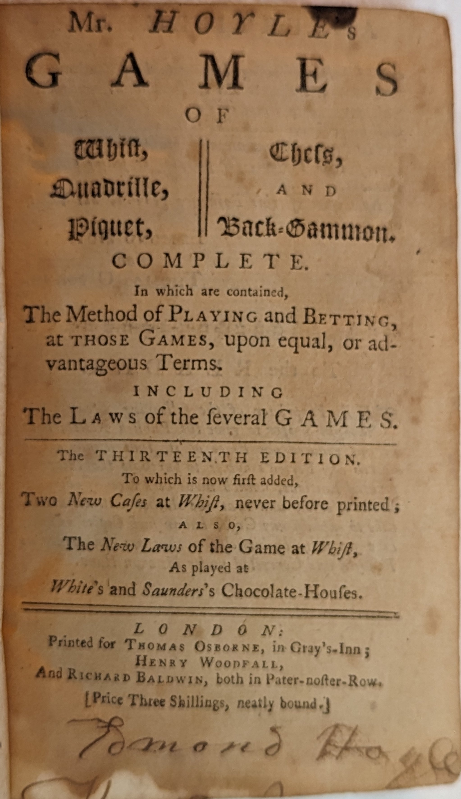

A Descriptive Bibliography of Edmond Hoyle
Copyright © 2014-26 by David Levy
(page updated 2026-01-30)User Guide
Games.4
Mr. Hoyle's Games, printed for Thomas Osborne et al, fourth London edition, “thirteenth” edition, 1763.
 |
Title: | Mr. HOYLE's | GAMES | OF | [3 lines to left of double rule] Whist, | Quadrille, | Piquet, | [3 lines to right of double rule] Cheſs, | AND | Back=Gammon. | COMPLETE. | In which are contained, | The Method of Playing and Betting, | at those Games, upon equal, or ad-|vantageous Terms. | INCLUDING | The Laws of the ſeveral GAMES. | [rule] | The THIRTEENTH EDITION. | To which is now firſt added, | Two New Caſes at Whiſt, never before printed; | ALSO, | The New Laws of the Game at Whiſt, | As played at | White's and Saunders's Chocolate-Houſes. | [double rule] | LONDON: | Printed for Thomas Osborne, in Gray's-Inn; | Henry Woodfall, | And Richard Baldwin, both in Pater-noſter-Row. | {Price Three Shillings, neatly bound.} |
| Collation: | 12o: π2 a4 B–K12 [$1–5 (−a3,4,B1) signed]; 114 leaves, pp. [i–ii] iii–xii, [1–3] 4–91 [92–95] 96–120 [121–123] 124–156 [157] 158–172 [173–175] 176–216 |
| Section Title Whist | A SHORT | TREATISE | On the GAME of | WHIST. | CONTAINING | The LAWS of the GAME: | AND ALSO | Some Rules whereby a Beginner may, with due | Attention to them, attain to the Playing it well. | Calculations for thoſe who will Bet the Odds on any | Points of the Score of the Game then playing and | depending. | Cases ſtated, to ſhew what may be effected by a very good | Player in critical Parts of the Game. | References to Cases, viz. at the End of the Rule, you | are directed how to find them. | Calculations, directing with moral Certainty, how to | play well any Hand or Game, by ſhewing the Chances of | your Partner’s having 1, 2, or 3 certain Cards. | With a Variety of Cases added in the Appendix. | [rule] | By Edmond Hoyle, Gent. | [rule] | The Laws of the Game, and an Explanation of the Calcu-|lations which are neceſſary to be underſtood by thoſe who | would play it well. | And Also, | A Dictionary for WHIST, which reſolves | almoſt all the critical Caſes that may happen at the | Game. | To which is added, | An ARTIFICIAL MEMORY: | Or, an eaſy Method of aſſiſting the Memory of thoſe | that play at the Game of WHIST. | And ſeveral Cases, not hitherto publiſhed. |
| Section Title Quadrille | [row of type orn] | A SHORT | TREATISE | On the GAME of | QUADRILLE; | SHEWING | The Odds of winning or loſing moſt Games | that are commonly played; either by calling | a King, or by playing Sans Prendre. | To which are added, | The LAWS of the GAME. | The Fifth Edition. | By Edmond Hoyle, Gent. | [row of type orn] |
| Section Title Piquet and Chess | [row of type orn] | A SHORT | TREATISE | On the GAME of | PIQUET; | DIRECTING | With moral Certainty, how to diſcard any | Hand to Advantage, by ſhewing the Chances | of taking in any one, two, three, four, or | five certain Cards. | Computations for thoſe who Bet their | Money at the Game. | ALSO, | The LAWS of the GAME. | To which are added, | Some Rules and Observations for playing | well at CHESS. | The Fifth Edition. | By Edmond Hoyle, Gent. | [row of type orn] |
| Section Title Backgammon | [row of type orn] | A SHORT | TREATISE | On the GAME of | BACK-GAMMON. | CONTAINING | [12 lines to left of rule] A Table of the thirty-ſix | Chances, with Directions | how to find out the Odds | of being hit, upon ſingle, | or double Dice. | Rules whereby a Beginner | may, with due Attention | to them, attain playing it | well. | The ſeveral Stages for car-|rying your Men home, in | order to loſe no Point. | [12 lines to right of rule] How to find out who is for-|wardeſt to win a Hit. | Caſes ſtated for Back-games, | with Directions how to | play for one. | Caſes ſtated, how to know | when you may have the | better of ſaving a Gammon | by running. | Variety of Caſes of Curioſity | and Inſtruction. | The Laws of the Game. | The Sixth Edition. | By Edmond Hoyle, Gent. | [row of type orn] |
| Contents: | Signature (Page) Reference | Contents | Signature (Page) Reference | Running Titles |
| π1r (i) | title [autographs of Edmond Hoyle and Thomas Osborne] | |||
| π1v (ii) | ‘ADVERTISEMENT. | [...] | To the READER. | [...]’ | |||
| π2r–a4v (iii–xii) | ‘[row of type orn] CONTENTS. | [...]’ | π2v–a4v (iv–xii) | ‘The CONTENTS.’ | |
| B1r (1) | section title whist | |||
| B1v (2) | blank | |||
| B2r–E10r (3–91) | ‘[double rule] | A SHORT | TREATISE | On the GAME of | WHIST. | [...]’ | B2v–E10r (4–91) | ‘A ſhort Treatise on | the Game of WHIST.’ | |
| E10v (92) | blank | |||
| E11r (93) | section title Quadrille | |||
| E11v (94) | blank | |||
| E12r–F12v (95–120) | ‘[double rule] | A SHORT | TREATISE | On the GAME of | QUADRILLE. | [...]’ | E12v–F12v (96–120) | ‘A ſhort Treatise on the | Game of QUADRILLE.’ | |
| G1r (121) | section title Piquet and Chess | |||
| G1v (122) | blank | |||
| G2r–H6v (123–156) | ‘[double rule] | A | TREATISE | On the GAME of | PIQUET. | [...]’ | G2v–H6v (124–156) | ‘A Treatise on PIQUET.’ | |
| H7r–I2v (157–172) | ‘[double rule] | SOME | Rules and Observations | FOR | Playing well at CHESS. | [...]’ | H7v–I2r (158–171) | ‘Rules and Observations | for Playing at CHESS.’ | |
| I2v (172) | ‘Rules and Observations, &c.’ | |||
| I3r (173) | section title Backgammon | |||
| I3v (174) | blank | |||
| I4r–K12v (175–216) | ‘[double rule] | A SHORT | TREATISE | On the GAME of | BACK-GAMMON. | [...]’ | I4v–K12r (176–215) | ‘A ſhort Treatise on the | Game of BACK-GAMMON.’ | |
| K12v (216) | ‘A ſhort Treatise, &c.’ |
| Catchwords: | a4r(xi) another [Odds,]; B2v(4) An- [An] |
| Press Figures: | π2r(i):1; B12r(i):2; B12v(o):1; C9r(o):2; C11v(i):3; D10r(i):2; D11r(o):3; E7r(o):1; E12r(i):3; F11r(o):4; F12r(i):1; G11r(o):1; G12r(i):3; H7v(i):4; H12v(o):1; I11r(o):3; I11v(i):2; K11r(o):1; K12r(i):3 |
| Publisher: | Thomas Osborne, Henry Woodfall, Richard Baldwin |
| Printer: | Henry Woodfall (advertisement) |
| Notices: | 1763-12-13 London Evening Post: "This day was publish'd, beautifully printed on a fine paper, in a small
genteel pocket volume, price 3s. neatly bound, the thirteenth edition, to
which are added, some cases in whist, never printed before; and the new laws
of the game, as play'd at White's and Saunder's Chocolate Houses; Mr.
Hoyle's Games Compleat...Be pleased to observe what you buy are signed by
Edmund Hoyle and Thomas Osborne; all others being pirated, or a bad edition,
and for which a reward is given to any who will inform of the sale of
them...Of whom may be had, just publish'd, Mr Hoyle's Essay towards making
the Game of Chess easily learned by those who know the moves only, without
the assistance of a master. Price 2s. 6d. Also his essay on the Doctrine of
Chances. 2s. 6d." 1764-12-11 London Evening Post: "This day was publish'd...the thirteenth edition...Mr Hoyle's Games...printed by H. Woodfall, for..." |
| Price: | 3s. (title, advertisement) |
| References: | ESTC N4079, Horr 659, Jessel 806, Marshall s7 no.9 p143 (1890-02-22), Rather 47 |
| Copies Seen: | BFl [I.795/HOYL (b1124964)]; E [Hall.195.c.]; L [RB.23.a.2924]; O [Jessel f.561]; O [Jessel f.562]; O [Jessel f.563]; DLC [GV1241.H6 1763]; NvLN [GV1227.H68 1760]; OCl [789.87H F63L]; Levy [1150]; Levy [1186] |
| Other Copies: | Ea [Abbotsford0]; HAG [KW 363 D 27] (Google); LT [Wb 790]; DeGH [GV1241.H86 1763]; MBAt [S.H85.3]; MH-H [SG.3652.165*] (ECCO); MWiW-C [Gen:1]; MiU [GV1227.H69 1763]; NIC [GV1241.H86 1765]; NNC-T [GV1241.H6 1763]; NjP [42845.479.141]; TxCM [GV1241.H694 1763]; UPB [759 H852 1760]; Wisniewski; AuANL [RB ONI 855] |
| Notes: | James Hodges owned a one-third share of the copyright of Games.3. On 1763-04-21, at a sale of his copyrights, Henry Woodfall bought two 1/6 shares for £30 and £32 10s. The two new cases at whist added as the final leaf of Games.3, the "twelfth" edition, are moved to chapter XVII "New Cases at Whist never publish'd 'till 1760" where they appear as cases II and III. Case IV is the last new material to be added by Hoyle, "A Case of Curiosity, first publish'd 1763." |